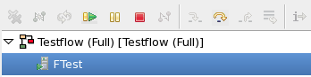
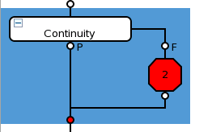

Single step testflow debugging
On the Debug view, you can control the debugging process by pausing (Suspend) the execution at any test suite, continue debugging by executing the next test suite(s) one by one (Step Over) or by executing the entire testflow with no interruption (Resume).
- Hold flags in a testflow changes its content. You may unintentionally save a testflow including the hold flags.
- During testflow execution, pop-up windows are displayed, where you must continue the
execution to the next test suite with a hold flag or stop the process. They require user
interaction to proceed or stop the testflow execution.
These pop-up windows may be displayed behind the main window of SmarTest and, therefore, may be not visible at a glance.
- To resume the execution of a paused testflow execution you have to unset all remaining hold flags.
- After using Run and Hold after here you still need to set the hold flags for each test suite if you want to step through the test suites one by one.
- Running a loop execution step-by-step is not possible.
Prerequisites
Enable single step testflow execution, see Step 2 in Running a testflow.
Supported targets
- Full testflow (see paragraph Limitation!)
- Test suite
- SelectionNote Running a wide selection behaves different than running a narrow selection (see Narrow selection and wide selection). Running a wide selection will behave like a full testflow execution without disconnecting on Binning.
- Loops
Additionally, the debug view shows information about the testflow execution, for example, which test suite or which loop run you have currently executed.
Using the single step mode
Run testflows and control debugging using the Suspend, Step Over, and Resume buttons from within the Debug view.
For testflow execution, SmarTest automatically displays the Debug view.

Icon |
Description |
|---|---|
Click to remove all terminated testflows in the Debug view |
|
Click Restart to restart testflow execution |
|
Click Resume to continue testflow execution with no stops unless there are enabled breakpoints in a test method |
|
Click Suspend to stop testflow execution |
|
Click Terminate to abort testflow execution |
|
Click Step over to execute exact one (next) test suite in testflow |
Examples:
- Using the Run and Hold after here:
Click Step Over and continue debugging with the next test suite.
- Using the loop execution:
Control the loop execution via the Suspend, Step Over, and Resume buttons.
When debugging one test suite at a time using the Run Selected option (by right-clicking in the Flow Sequence Editor or pressing Alt+T after selecting a test suite), pay attention to selection of sub-branches. See sections When you run test suites with/without their sub-branches. To ensure that the test results are updated, run a wide selection as seen in the example below. (See also Narrow selection and wide selection.)

Even if you did not enable the single step mode before starting the testflow execution, for the following execution modes you can suspend the execution at any given point of time. At this time you suspend the execution, SmarTest automatically enables the single step mode and you continue debugging in this mode.
Limitation
You cannot start a full testflow execution (default name: Testflow (Full)) in the single step mode.
Solution:
Select the first test suite and click Run and Hold after here. After a hold flag stops the testflow execution, you can continue with the single step mode.
Examples
Preconditions for all examples
- Testflow editor is opened
- Testflow is loaded
Specification for "Run and Hold"
Starting with Run and Hold testflow execution you can seamlessly continue testflow debugging using the Step Over button.
Preconditions:
- The testflow contains at least two test suites in the same branch. The first test suite is named Testsuite_1, the second Testsuite_2.
Procedure:
- On the testflow editor, select Testsuite_1.
- Right-click the test suite and select .
Testflow execution starts and pauses after executing the selected test suite.
A WARNING window is displayed.
The Debug view opens, showing the execution node Testflow (Full) with the child entry Ftest (Testsuite_1).
The buttons Resume, Terminate, and Step Over are enabled.
- Click Step Over.
Test suite Testsuite_2 is executed and execution is waiting.
A WARNING window is displayed.
The Ftest (Testsuite_1) child entry changes to the Ftest (Testsuite_2).
- Control the process:
- Click Resume to continue testflow execution with no stops.
- Click Step Over to execute exact one (next) test suite in testflow.
- Click Terminate to abort testflow execution.
Specification for "Run selected"
Starting with Run Testflow (Selection) testflow execution you can perform single step testflow debugging using the Step Over button.
Preconditions:
- Testflow contains at least five test suites in the same branch. Testsuite_1, Testsuite_2, Testsuite_3, , Testsuite_4, and Testsuite_5.
Procedure:
- Select Testsuite_1 and Testsuite_3.
- Right-click Testsuite_1 and select .
The Run Configurations windows is displayed.
- Select the default Testflow (Selection) run configuration.
For details on the configuration, see Running a testflow.
- Select Enable 'single step' execution mode.
- Click Apply.
- Click Run.
The testflow execution starts and pauses after executing Testsuite_1.
The Debug view opens, showing the execution node Testflow (Selection) with the child entry Ftest (Testsuite_1).
The buttons Resume, Terminate, and Step Over are enabled.
- Click Step Over.
Test suite Testsuite_3 is executed and execution is terminated.
The Ftest (Testsuite_1) child entry changes to the Ftest (Testsuite_3).
In all cases the testflow execution terminates before the execution of test suite Testsuite_5.
Specification for "Run selected (loop)"
Starting with Run Testflow (Selection) testflow execution you can perform single step testflow debugging using the Step Over button, and you can manually control the loop execution.
Precondition:
- Testflow contains at least five test suites in the same branch. Testsuite_1, Testsuite_2, Testsuite_3, , Testsuite_4, and Testsuite_5.
Procedure:
- Select Testsuite_1 and Testsuite_3.
- Right-click Testsuite_1 and select .
- Select the default Testflow (Selection) run configuration.
- Select Enable 'single step' execution mode.
- Select Loop and Loop Indefinitely.
For details on loop configuration, see Loop configuration settings.
- Click Apply.
- Click Run.
The testflow execution starts and pauses after executing Testsuite_1.
The Debug view opens, showing the execution node Testflow (Selection) with the child entry Ftest (Testsuite_1).
The buttons Resume, Terminate, and Step Over are enabled.
- Click Step Over.
Test suite Testsuite_2 is executed and execution is waiting.
The Ftest (Testsuite_1) child entry changes to the Ftest (Testsuite_3).
- Control the process:
- Click Resume to continue the looping testflow execution.
- Click Suspend to pause the execution.
- Click Step Over to execute exact one (next) test suite in testflow.
- Click Terminate to abort testflow execution.
Specification for "Run custom testflow"
Starting with Run Testflow (User Defined) testflow execution you can perform single step testflow debugging using Step Over button, optionally you may control loop execution if loop is enabled (see Loop configuration settings).
Precondition:
- Testflow contains at least five test suites in the same branch. Testsuite_1, Testsuite_2, Testsuite_3, , Testsuite_4, and Testsuite_5.
Procedure:
- Select Testsuite_1 and Testsuite_3.
- Right-click Testsuite_1 and select .
- Create a new Testflow (User Defined) run configuration.
By default, Whole Flow is enabled and the Single Step Execution configuration area is disabled.
- Select Testsuite(s) or Group(s) and type or
select your selection.
For details on the configuration, see Running a testflow.
The Single Step Execution configuration area is now enabled.
- Select Enable 'single step' execution mode.
- Click Apply.
- Click Run.
The testflow execution starts and pauses after executing Testsuite_1.
The Debug view opens, showing the execution node Testflow (Selection) with the child entry Ftest (Testsuite_1).
The buttons Resume, Terminate, and Step Over are enabled.
- Click Step Over.
Test suite Testsuite_2 is executed and execution is waiting.
The Ftest (Testsuite_1) child entry changes to the Ftest (Testsuite_3).
- Control the process:
- Click Resume to continue the testflow execution with no stops.
- Click Step Over to execute exact one (next) test suite in testflow.
- Click Terminate to abort testflow execution.
In all cases the testflow execution terminates before the execution of test suite Testsuite_5.
Functional changes
- Introduced in SmarTest 7.1.0